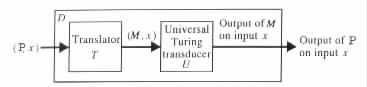
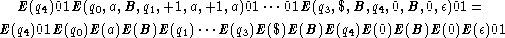
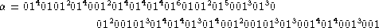

A Representation for Turing Transducers
A Universal Turing Transducer
Programs are written to instruct computing machines on how to solve given problems. A program P is considered to be executable by a computing machine A if A can, when given P and any x for P, simulate any computation of P on input x.
In many cases, a single computing machine can execute more than one program, and thus can be programmed to compute different functions. However, it is not clear from the previous discussion just how general a computing machine can be. Theorem 4.4.1 below, together with Church's thesis, imply that there are machines that can be programmed to compute any computable function. One such example is the computing machine D, which consists of a "universal" Turing transducer U and of a translator T, which have the following characteristics (see Figure 4.4.1).
|

|
U is a deterministic Turing transducer that can execute any given deterministic Turing transducer M. That is, U on any given (M, x) simulates the computation of M on input x (see the proof of Theorem 4.4.1).
T is a deterministic Turing transducer whose inputs are pairs (P, x) of programs P written in some fixed programming language, and inputs x for P. T on a given input (P, x) outputs x together with a deterministic Turing transducer M that is equivalent to P. In particular, if P is a deterministic Turing transducer (i.e., a program written in the "machine" language), then T is a trivial translator that just outputs its input. On the other hand, if P is a program written in a higher level programming language, then T is a compiler that provides a deterministic Turing transducer M for simulating P.
When given an input (P, x), the computing machine D provides the pair to T, and then it feeds the output (M, x) of T to U, to obtain the desired output of P on input x.
Definitions A universal Turing transducer U is a deterministic Turing transducer that on any given pair (M, x), of a deterministic Turing transducer M and of an input x for M, simulates the behavior of M on x. Inputs that do not have the form (M, x) are rejected by U. Universal Turing machines are defined similarly.
It should be noted that a pair (M, x) is presented to a universal Turing transducer in encoded form, and that the output of the universal Turing transducer is the encoding of the output of M on input x. For convenience, the mentioning of the encoding is omitted when no confusion arises. Moreover, unless otherwise stated, a "standard" binary representation is implicitly assumed for the encodings.
A Representation for Turing Transducers
In what follows, a string is said to be a standard binary representation of a Turing transducer M = <Q, S, G, D, d, q0, B, F> if it is equal to E(M), where E is defined recursively in the following way.
Intuitively, we see that E provides a binary representation for the symbols in the alphabets of the Turing transducer, a binary representation for the states of the Turing transducer, and a binary representation for the possible heads movements. Then it provides a representation for a sequence of such entities, by concatenating the representations of the entities. The string 01 is used as separator for avoiding ambiguity.
By definition, a given Turing transducer can have some finite number of standard binary representations. Each of these representations depends on the order chosen for the states in Q, the order chosen for the symbols in (S È G È D È {¢, $}) - {B}, the order chosen for the states in F, and the order chosen for the transition rules in d. On the other hand, different Turing transducers can have identical standard binary representations if they are isomorphic, that is, if they are equal except for the names of their states and the symbols in their alphabets.
Example 4.4.1 If M is the Turing transducer whose transition diagram is given in Figure 4.1.3, then E(M) can be the standard binary representation

where E(q0) = 011, E(q1) = 0111, E(q2) = 01111, E(q3) = 011111, E(q4) = 0111111, E(B) = 0, E(¢) = 011, E($) = 0111, E(a) = 01111, ¼
0 and 00 are examples of binary strings that are not standard binary representations of any Turing transducer.
The string

represents a Turing transducer with one accepting state and four transition rules. Only
the first transition rule has a nonempty output. The Turing transducer has one auxiliary
work tape.
E(M)01E(¢x$) is assumed to be the standard binary representation of (M, x), with E(¢x$) = E(¢)E(a1) · · · E(an)E($) when x = a1 · · · an.
The proof of the following result provides an example of a universal Turing transducer.
Theorem 4.4.1 There exists a universal Turing transducer U.
Proof U can be a two auxiliary-work-tape Turing transducer similar to M2 in the proof of Proposition 4.3.1. Specifically, U starts each computation by checking that its input is a pair (M, x) of some deterministic Turing transducer M = <Q, S, G, D, d, q0, B, F> and of some input x for M (given in standard binary representation). If the input is not of such a form, then U halts in a nonaccepting configuration. However, if the input is of such a form, U simulates a computation of M on x.
U, like M2, uses two auxiliary work tapes for keeping track of the content of the auxiliary work tapes of M. However, U also uses the auxiliary work tapes for keeping track of the states and the input head locations of M. Specifically, the universal Turing transducer U records a configuration (uqv, u1qv1, ¼, umqvm, w) of M by storing #E(q)#|u|#E(u1)#E(v1)# · · · #E(um)#E(vm)# in an auxiliary work tape, and storing E(w) in the output tape.
To determine the transition rule (q, a, b1, ¼, bm, p, d0, c1, d1, ¼, cm, dm, r) that M uses in
a simulated move, U extracts the state q and the symbols a, b1, ¼ , bm. U records the string
E(q)E(a)E(b1) · · · E(bm) in the auxiliary work tape that does not keep the configuration
of M that is in effect. Then U determines p, d0, c1, d1, ¼ , cm, dm, r by searching E(M) for
the substring that follows a substring of the form 01E(q)E(a)E(b1) · · · E(bm).